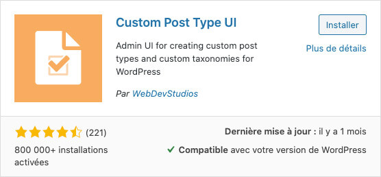

Par défaut, WordPress offre différentes collections:
- Articles
- Médias
- Pages
- Commentaires.
Bien que pratiques, il est parfois souhaitable d'en créer des nouvelles.
La déclaration d'un nouveau type de posts doit se fait via le fichier functions.php.
Par exemple:
Dans cet exemple, avec 'labels' => array( ... ) indique à WordPress comment nommer ce nouveau post dans différents scénarios.
'supports' => array( ... ) indique les champs disponibles pour ce type de post dans le tableau de bord.
Tandis que addaction('init', 'createpost_type'); indique à WordPress d'appeler cette fonction créant le nouveau type de post à son instanciation.
Dès ce moment, la nouvelle collection devrait être disponible dans le tableau de bord.
Pour afficher cette collection, il faudra faire une requête à WordPress et stocker son résultat dans une variable.
Par exemple:
Ensuite, il faudra boucler parmi les résultats obtenus et imprimer print ceux-ci dans une page:
Les fonctions de base, tel que: the_title() ou the_content() retourneront dans le contexte de cette boucle les informations associées à notre collection de produits.
Est une extension WordPress facilitant grandement la création de nouveaux types de posts. Dans l'onglet extensions (plugins) du tableau de bord, recherchez Custom Post Type UI et repérez l'extension créée par WebDevStudios.
Installez et activez là.
Création de nouveaux types de posts
Une fois l'extension installée, un onglet CPT UI devrait être visible dans la barre latérale servant de menu.
À partir de cet onglet, il est possible de créer de nouveaux Types de posts en cliquant sur (Add/Edit Post Type).
Remplissez les trois champs de base:
- Slug nom pour accéder au post dans le code
- Plural Label nom au pluriel des posts
- Singular Label nom au singulier des posts
Optionnellement, vous pouvez remplir les différents champs affichés après les trois premiers pour plus de contrôle sur l'affichage de votre nouveau type de post.
Cliquez sur Populate missing labels based on chosen labels et appuyez sur Add Post Type.
Un nouveau type de post devrait automatiquement apparaître dans le menu latéral du tableau de bord de WordPress.
Il est possible d'ajouter les nouveaux types de posts dans un menu personnalisé. Cependant, cette option est désactivée par défaut.
Pour l'activer:
Allez dans
Apparence -> Menus.En haut à droite de la page, repérez le bouton Options de l'écran et cliquez dessus.
Dans le panneau ouvrant, cochez les types de posts ayant la permission d'être inclus dans les menus.
Afin de pouvoir sélectionner un modèle (template) pour un type de post personnalisé, il est nécessaire de spécifier un modèle compatible.
Pour ce faire, dans le fichier PHP d'un modèle, il faut ajouter dans les commentaires de début de page une propriété intitulée Template Post Type et lui spécifier les types de posts compatibles.
Par exemple, pour qu'un modèle soit compatible avec les posts de base et les posts personnalisés de type partenaire, il faut écrire:
Custom Post Type UI permet d'exporter la structure de ses posts personnalisés afin de pouvoir les importer sur un autre site.
Exportation
Il faut aller dans l'onglet CPT UI et sélectionner l'option Tools. À cet endroit dans la colonne de droite, une boite de texte permet de copier un code JSON contenant la structure des posts personnalisés.
Importation
Pour importer des posts personnalisés, il faut aussi aller dans l'onglet CPT UI et sélectionner l'option Tools. Sur cette page, dans la colonne de gauche, se trouve une boite de texte vide permettant de copier un code JSON. Importez le code désiré permet de recréer la structure des posts personnalisés d'un projet à un autre.